♨
ของกินหลากหลาย
เมนูเด็ดครบทั้งคาวหวาน
พื้นที่รวมความอร่อยและบรรยากาศดี ๆ
ในจุดนัดพบแห่งใหม่ของประโคนชัย
เมนูเด็ดครบทั้งคาวหวาน
สไตล์ญี่ปุ่น ถ่ายได้ทุกมุม
ทั้งกลางวันและกลางคืน
มาได้ทุกวัย สนุกได้ทั้งแก๊ง
MORE THAN A FOOD MARKET
ตลาดพากิน ประโคนชัย มากกว่าตลาดอาหาร คือพื้นที่รวมความอร่อย บรรยากาศสไตล์ญี่ปุ่น และช่วงเวลาดี ๆ ที่ให้คุณได้กิน เที่ยว ถ่ายรูป และพักผ่อนกับคนพิเศษ
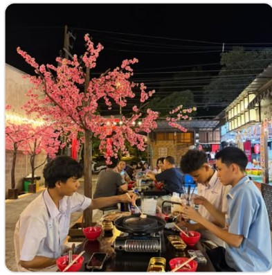
รวมร้านน่ากินทั้งญี่ปุ่น ไทย ของทานเล่น และเมนูฟิวชัน
ซากุระ โทริอิ และแลนด์มาร์กที่ถ่ายสวยได้ทั้งกลางวันและกลางคืน
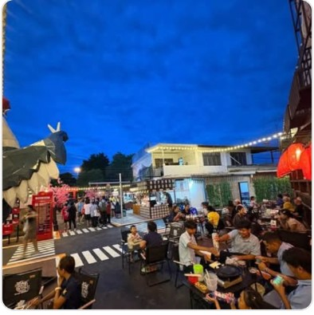
พื้นที่นั่งเล่น แสงไฟ และบรรยากาศที่เหมาะกับการพักหลังเลิกงาน
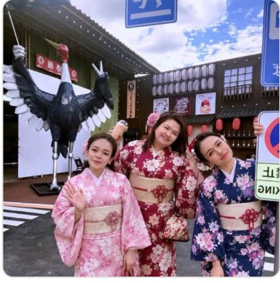
มาได้ทั้งเพื่อน คู่รัก ครอบครัว และกลุ่มที่อยากใช้เวลาร่วมกัน
EAT AROUND PA GIN
ร้านเด็ดที่ห้ามพลาด
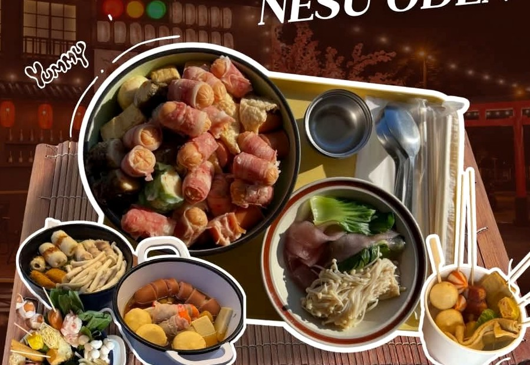
โอเด้ง & เมนูญี่ปุ่น
→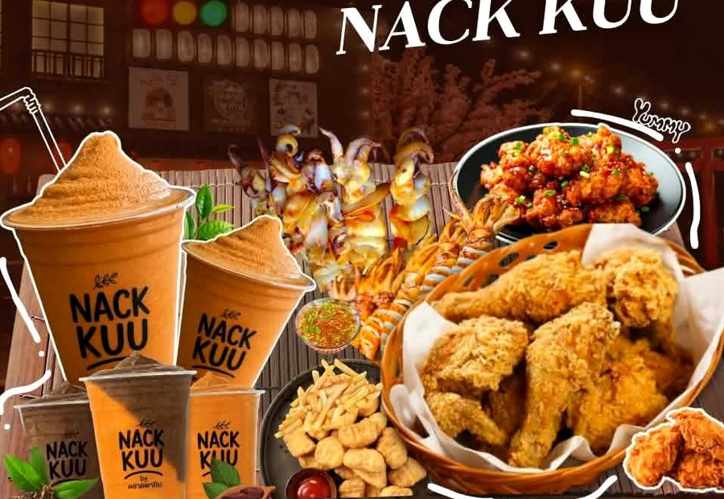
ไก่ทอด • ของทานเล่น • เครื่องดื่ม
→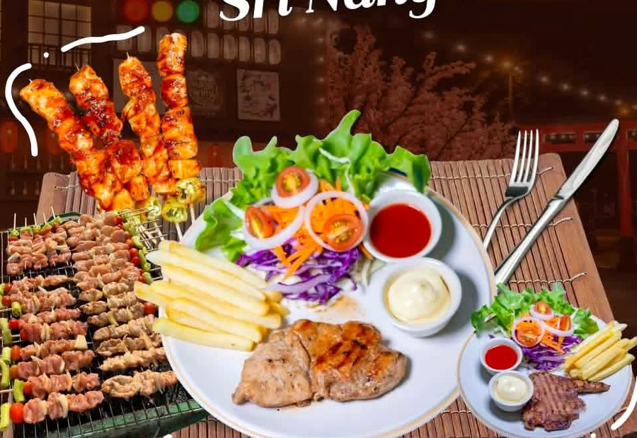
สเต็ก & ปิ้งย่าง
→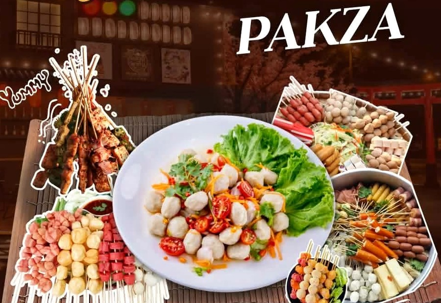
ลูกชิ้น • ปิ้งย่าง • ของเสียบไม้
→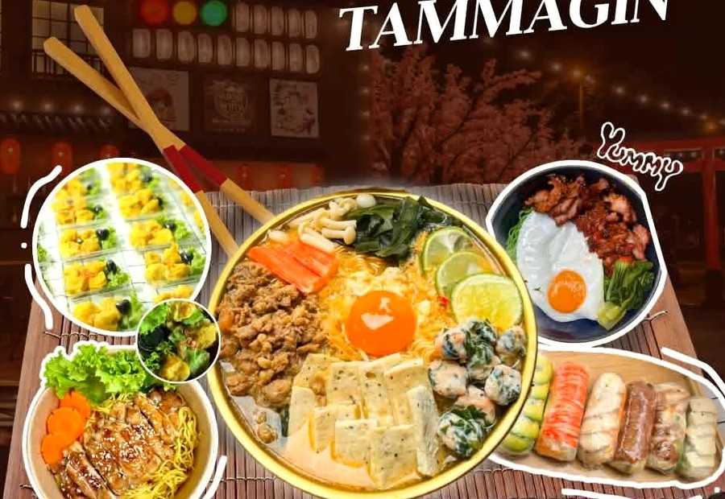
ราเมง • ข้าว • ฟิวชันญี่ปุ่น
→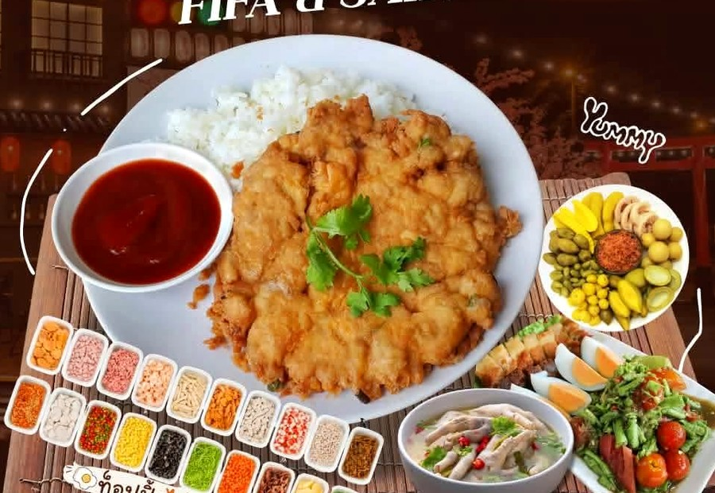
อาหารจานเดียว • ไข่เจียว
→CHECK-IN & SHARE
เช็กอินมุมสวย ๆ สไตล์ญี่ปุ่น ก่อนเดินเลือกของกิน แล้วกลับมานั่งชิลยาว ๆ ได้ทั้งเย็น
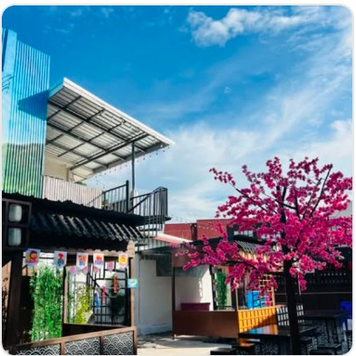
แลนด์มาร์กถ่ายรูปยอดฮิต
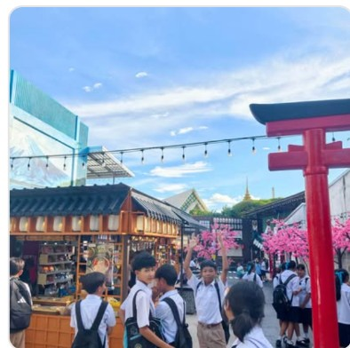
สัญลักษณ์ของตลาดพากิน
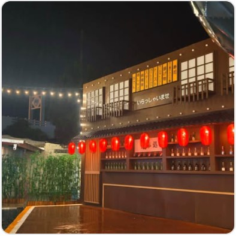
บรรยากาศอบอุ่นยามค่ำคืน
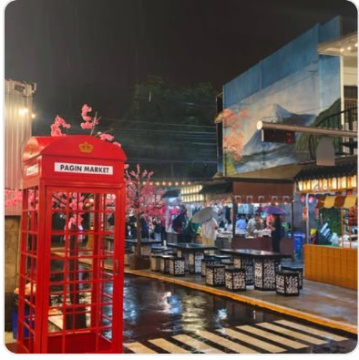
มุมคลาสสิกที่ไม่ควรพลาด
PA GIN MOMENTS
“มากิน… แล้วได้ความประทับใจกลับไป”
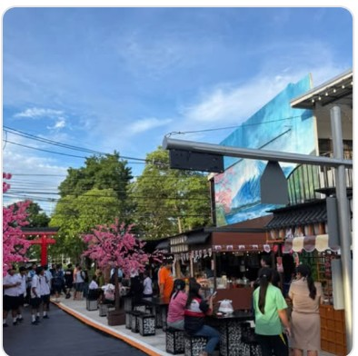
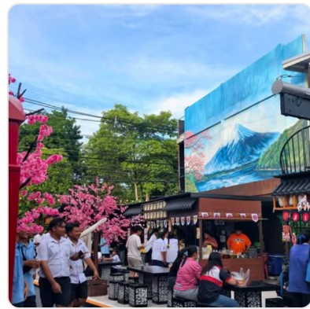
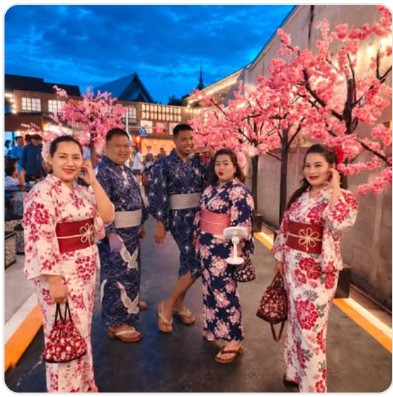

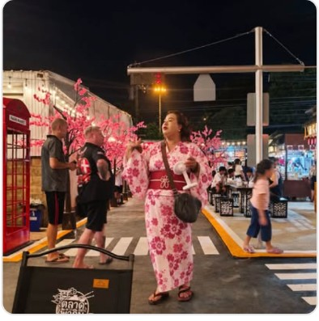
PLAN YOUR VISIT
นัดเพื่อน พาครอบครัว หรือแวะมาหาของอร่อย พร้อมมุมถ่ายรูปและพื้นที่นั่งพักในบรรยากาศสบาย ๆ ใจกลางประโคนชัย
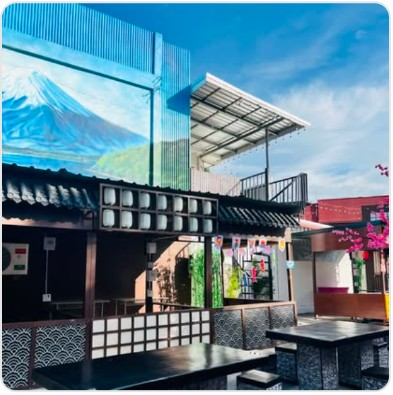